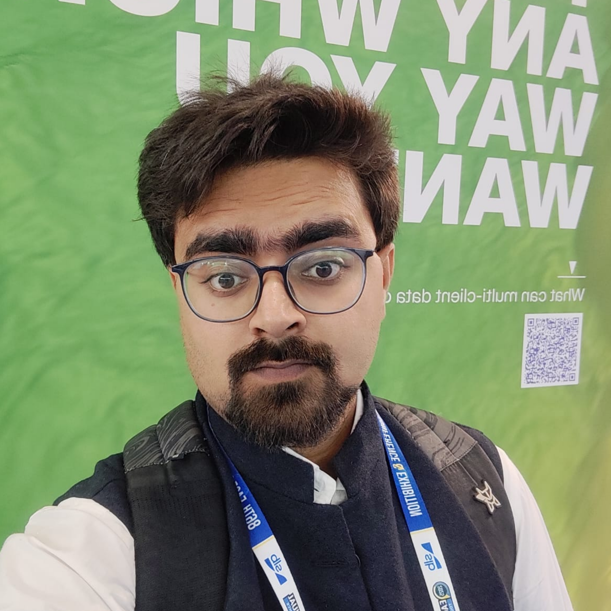
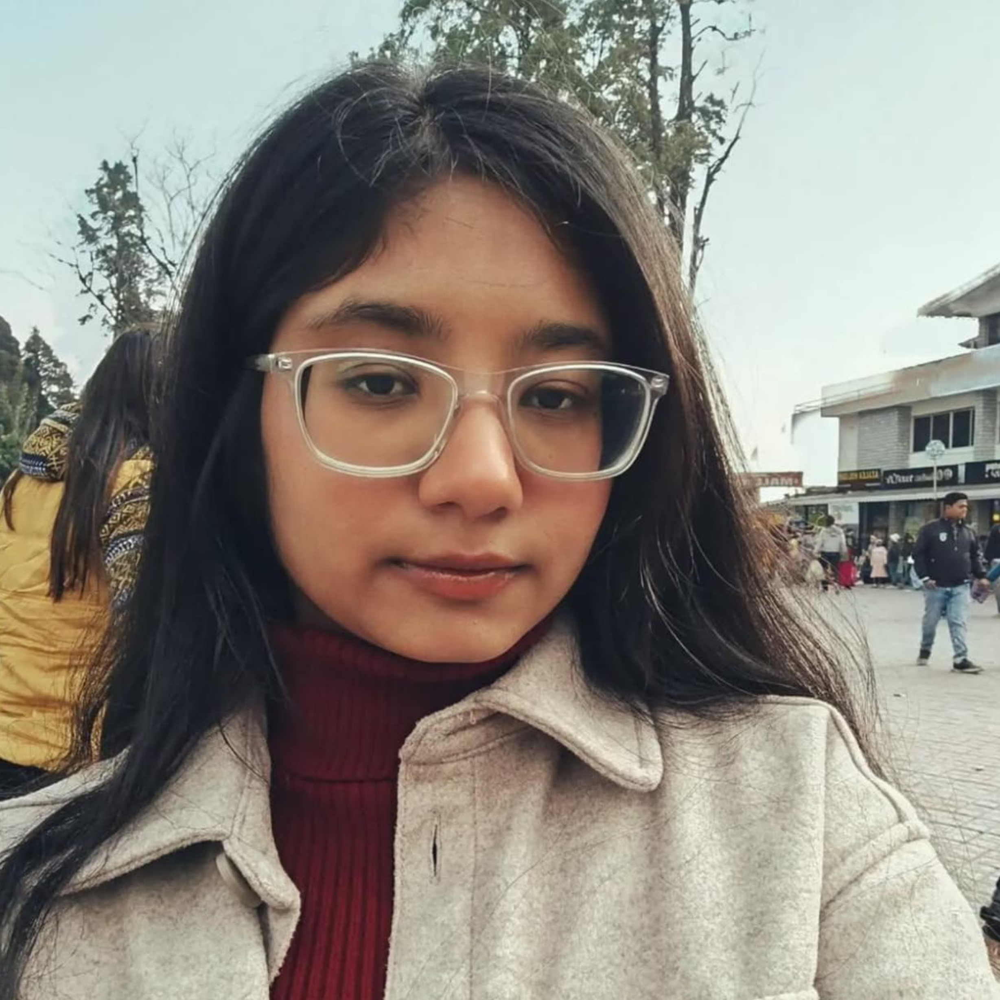
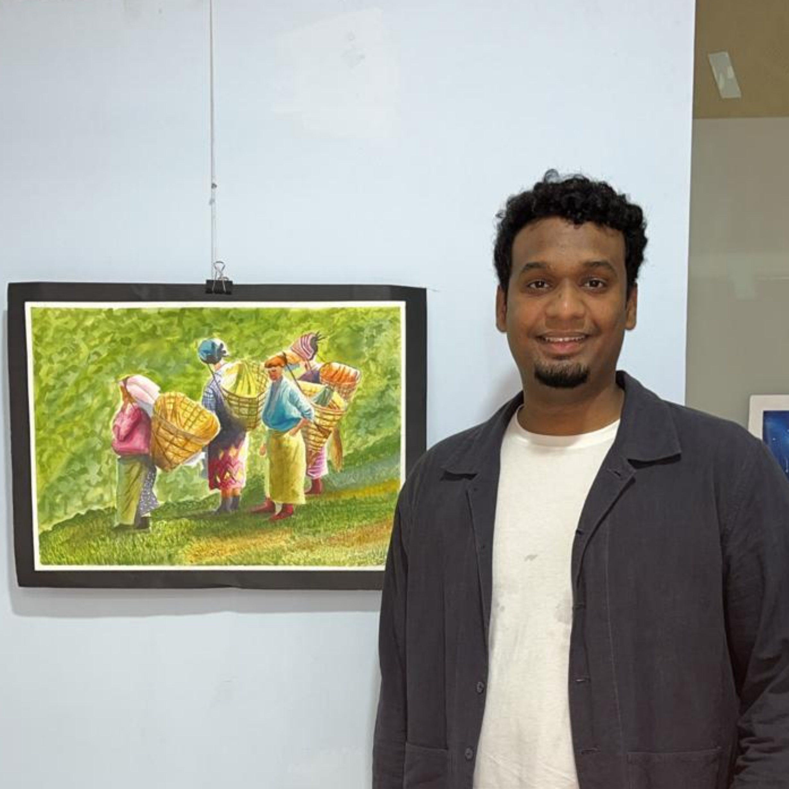

The European Association of Geoscientists and Engineers (EAGE) is a global professional organization dedicated to geoscience and engineering disciplines related to the Earth’s surface and subsurface, particularly in energy, oil and gas, mineral exploration, and environmental studies. It was founded in 1951 as the European Association of Exploration Geophysicists (EAEG) with the primary goal of creating a platform for scientists and industry professionals in Europe to exchange ideas, research findings, and technological developments in exploration geophysics. By the 1980s and 1990s, the influence and importance of the organization had expanded well beyond the boundaries of Europe. In 2000, EAEG merged with the European Association of Petroleum Geologists (EAPG), forming the modern EAGE as it is known today. This merger reflected the growing need for interdisciplinary collaboration between geophysicists, geologists, and engineers in subsurface exploration and resource development. From its inception, the association has remained true to its motto, “Quaere et Invenies,” meaning “seek and ye shall find.” The EAGE IIT Bombay Student Chapter was established in August 2021, marking the first chapter of EAGE at IIT Bombay. The chapter aims to adopt a holistic approach to sharing and promoting knowledge across the broad spectrum of geoscientific disciplines. EAGE promotes the development and application of geosciences and related engineering fields, encourages innovation in every endeavour, and builds connections among those working in, studying, or interested in these areas by organizing lecture series, conferences, workshops, and various events focused on knowledge exchange. The EAGE Student Chapter at IIT Bombay aligns with the official values of EAGE and seeks to connect the institute’s students with the thriving global community of industry leaders, researchers, entrepreneurs, and innovators in the field of Earth Sciences.
Council Members
Prof. Bharath Shekar
Faculty Advisor
Abir Banerjee
President
About Me
A PhD scholar in the Genesis of Ore Deposits (GOD) group, IIT Bombay,
I got interested in Geosciences due to my love for nature and everything rural. My research revolves around mineral exploration, critical minerals and geochemical analysis of ores. The ultimate goal of my research is to help achieve cleaner energy resources for the betterment of our future. Apart from my research,
I am also passionate about music, the dramatic arts, cooking and travelling.

Shobhit Mishra
Vice President
About Me
I’m a geophysics PhD student at SIMLAB, IIT Bombay trying to make neural networks understand seismic waves. My research blends physics, machine learning, and subsurface imaging. When I’m not training models, I’m probably debugging them.

Krittika Sen
General Secretary
About Me
I’m a second-year MSc Geology student interested in trace element geochemistry and geochemical exploration techniques. I have a penchant for reading, and when I’m not reading, you’ll probably find me wandering around campus, occasionally stopping to pet a dog.

Eric Joseph
Event Manager
About Me
I'm a Masters student who studies petroleum systems and subsurface and how we can assess and engineer them to store CO2. Subsurface makes alot of sense as long as you get to the "core" of it.
Riya Tevatiya
Treasurer
About Me
I am an M.Sc. Applied Geophysics student at IIT Bombay with interests in geomechanics, rock physics, petrophysics, and seismic studies. My work focuses on understanding subsurface properties and processes using geophysical datasets and quantitative methods. I have experience in gravity inversion and electrical resistivity inversion for subsurface characterization. My current work involves geomechanical and rock physics modelling for reservoir analysis and CO₂ sequestration studies
Shashank Singh
PR Manager
About Me
I am an M.Sc. Applied Geology student at IIT Bombay interested in structural, sedimentary geology, and geochemistry. My current work involves geochemical studies of sedimentary rocks and interpreting their provenance and weathering history.